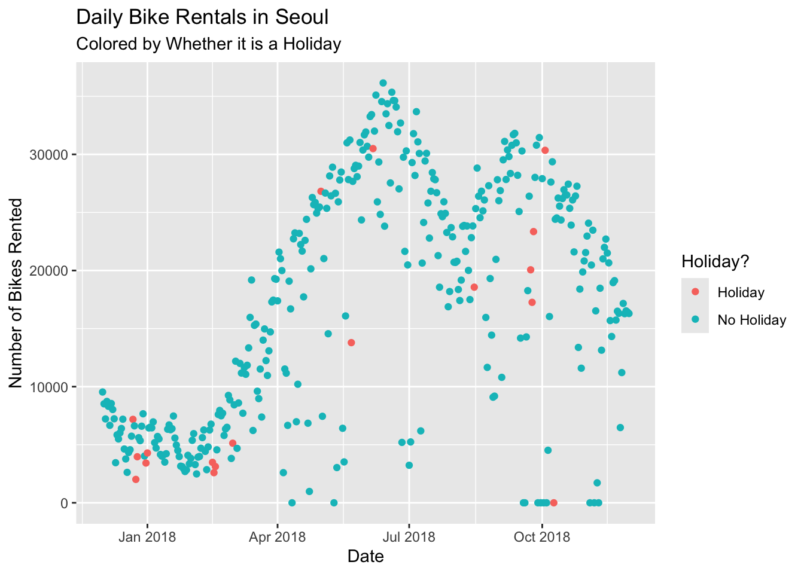

── Attaching core tidyverse packages ──────────────────────── tidyverse 2.0.0 ──
✔ dplyr 1.1.4 ✔ readr 2.1.5
✔ forcats 1.0.0 ✔ stringr 1.5.1
✔ ggplot2 4.0.0 ✔ tibble 3.3.0
✔ lubridate 1.9.4 ✔ tidyr 1.3.1
✔ purrr 1.1.0
── Conflicts ────────────────────────────────────────── tidyverse_conflicts() ──
✖ dplyr::filter() masks stats::filter()
✖ dplyr::lag() masks stats::lag()
ℹ Use the conflicted package (<http://conflicted.r-lib.org/>) to force all conflicts to become errors
# read in the Seoul Bike Databike_data <-read_csv("SeoulBikeData.csv", locale=locale(encoding="latin1"))
Rows: 8760 Columns: 14
── Column specification ────────────────────────────────────────────────────────
Delimiter: ","
chr (4): Date, Seasons, Holiday, Functioning Day
dbl (10): Rented Bike Count, Hour, Temperature(°C), Humidity(%), Wind speed ...
ℹ Use `spec()` to retrieve the full column specification for this data.
ℹ Specify the column types or set `show_col_types = FALSE` to quiet this message.
# check for missing valuescolSums(is.na(bike_data))
Date Rented Bike Count Hour
0 0 0
Temperature(°C) Humidity(%) Wind speed (m/s)
0 0 0
Visibility (10m) Dew point temperature(°C) Solar Radiation (MJ/m2)
0 0 0
Rainfall(mm) Snowfall (cm) Seasons
0 0 0
Holiday Functioning Day
0 0
The above code reads in the data, and then checks to see how many missing observation are in each column of our data. Luckily, there are no missing observations in any of our columns!
# check the column types and column valuesstr(bike_data)
The str() function allows us the examine the structure of our data. Here we can see which of our variables are numeric, and which ones are character. We can see the first few observations of each column, so we know whether the values makes sense in context, and we see the number of observations in each column, which is 8760 for every variable in our data set.
# basic summaru stats of numeric variablesmean(bike_data$`Rented Bike Count`)
[1] 704.6021
sd(bike_data$`Rented Bike Count`)
[1] 644.9975
The mean number of rented bikes per hour in Seoul in 2018 was 704.6021. The standard deviation of this mean is 644.9975.
mean(bike_data$Hour)
[1] 11.5
sd(bike_data$Hour)
[1] 6.922582
The mean of our hour variable is 11.5. The standard deviation is 6.922582. These number are not very useful in context.
mean(bike_data$`Temperature(°C)`)
[1] 12.88292
sd(bike_data$`Temperature(°C)`)
[1] 11.94483
The mean hourly temperature in Seoul in 2018 was 12.88292°C, with a standard deviation of 11.94483°C.
mean(bike_data$`Humidity(%)`)
[1] 58.22626
sd(bike_data$`Humidity(%)`)
[1] 20.36241
The mean hourly humidity in Seoul in 2018 was 58.22626%, with a standard deviation of 20.36241%.
mean(bike_data$`Visibility (10m)`)
[1] 1436.826
sd(bike_data$`Visibility (10m)`)
[1] 608.2987
The mean hourly visibility in Seoul in 2018 was 14368.26 meters, with a standard deviation of 6082.987 meters.
mean(bike_data$`Dew point temperature(°C)`)
[1] 4.073813
sd(bike_data$`Dew point temperature(°C)`)
[1] 13.06037
The mean hourly dew point temperature in Seoul in 2018 was 4.073813°C, with a standard deviation of 13.06037°C.
mean(bike_data$`Solar Radiation (MJ/m2)`)
[1] 0.5691107
sd(bike_data$`Solar Radiation (MJ/m2)`)
[1] 0.8687462
The mean hourly solar radiation level in Seoul in 2018 was 0.5691107 MJ/m2, with a standard deviation of 0.8687462 MJ/m2.
mean(bike_data$`Rainfall(mm)`)
[1] 0.1486872
sd(bike_data$`Rainfall(mm)`)
[1] 1.128193
The mean hourly rainfall in Seoul in 2018 was 0.1486872mm, with a standard deviation of 1.128193mm.
mean(bike_data$`Snowfall (cm)`)
[1] 0.07506849
sd(bike_data$`Snowfall (cm)`)
[1] 0.4367462
The mean hourly snowfall in Seoul in 2018 was 0.07506849cm, with a standard deviation of 0.4367462cm.
# check unique levels of categorical variablesunique(bike_data$Seasons)
[1] "Winter" "Spring" "Summer" "Autumn"
unique(bike_data$Holiday)
[1] "No Holiday" "Holiday"
unique(bike_data$`Functioning Day`)
[1] "Yes" "No"
# convert to Date variable to date type using lubridate packagebike_data <- bike_data |>mutate(date =dmy(Date)) |>select(-Date)# convert character variables to factorsbike_data <- bike_data |>mutate(season =as.factor(Seasons),holiday =as.factor(Holiday),functioning_day =as.factor(`Functioning Day`) ) |>select(-c(Seasons, Holiday, `Functioning Day`))# rename column names that need to be fixedbike_data |>names()
The above code makes the bike rental data easier to work with in several. When the data was read in, Date was included as a character variable, but after using the dmy() function from the lubridate package, the date variable (now lowercase) is of the date data type. After looking at the unique levels of each other character variable, the remaining character variables have been stored as factors, with their names updated to be more compatible with R.
All the numeric variables also had their names updated, so now every variable in our data set has lower, snake-case variable names.
# summary stats across categorical variables (especially for rented bike count)# mean and standard deviation of bikes rented per hour grouped by seasonbike_data |>group_by(season) |>summarize(mean_rentals =mean(bike_count),sd_rentals =sd(bike_count) )
# A tibble: 4 × 3
season mean_rentals sd_rentals
<fct> <dbl> <dbl>
1 Autumn 820. 651.
2 Spring 730. 622.
3 Summer 1034. 690.
4 Winter 226. 150.
The above table gives us the mean and standard deviation of hourly bike rentals in Seoul in 2018, grouped by the season.
# mean and standard deviation of bikes rented per hour grouped by whether is it a holiday or notbike_data |>group_by(holiday) |>summarize(mean_rentals =mean(bike_count),sd_rentals =sd(bike_count) )
The above table gives us the mean and standard deviation of hourly bike rentals in Seoul in 2018, grouped by whether it is a holiday.
# mean and standard deviation of bikes rented per hour grouped by whether the bike rental place is available (will be mean and sd 0 when non-functional hours)bike_data |>group_by(functioning_day) |>summarize(mean_rentals =mean(bike_count),sd_rentals =sd(bike_count) )
# A tibble: 2 × 3
functioning_day mean_rentals sd_rentals
<fct> <dbl> <dbl>
1 No 0 0
2 Yes 729. 642.
The above table gives us the mean and standard deviation of hourly bike rentals in Seoul in 2018, grouped by whether it is functioning hours. During non-functioning hours, it makes sense that there are no bike rentals to observe.
# # mean and standard deviation of bikes rented per hour grouped by season and whether it is a holidaybike_data |>group_by(season, holiday) |>summarize(mean_rentals =mean(bike_count),sd_rentals =sd(bike_count) )
`summarise()` has grouped output by 'season'. You can override using the
`.groups` argument.
# A tibble: 8 × 4
# Groups: season [4]
season holiday mean_rentals sd_rentals
<fct> <fct> <dbl> <dbl>
1 Autumn Holiday 758. 660.
2 Autumn No Holiday 823. 651.
3 Spring Holiday 635. 609.
4 Spring No Holiday 733. 622.
5 Summer Holiday 1022. 564.
6 Summer No Holiday 1034. 693.
7 Winter Holiday 157. 108.
8 Winter No Holiday 232. 152.
The above table gives us the mean and standard deviation of hourly bike rentals in Seoul in 2018, grouped by both the season and whether it is a holiday.
# summarize across days, so there is only one observation for each daybike_data <- bike_data |>group_by(date, season, holiday) |>summarize(bike_count =sum(bike_count),rainfall =sum(rainfall),snowfall =sum(snowfall),mean_temp =mean(temperature),mean_humidity =mean(humidity),mean_wind_speed =mean(wind_speed),mean_visibility =mean(visibility),mean_dew_point =mean(dew_point_temp),mean_solar_rad =mean(solar_radiation) )
`summarise()` has grouped output by 'date', 'season'. You can override using
the `.groups` argument.
The above code summarizes across days, so bike_data now stores daily bike rental data instead of hourly data. bike_count, rainfall, and snowfall now store the daily totals instead of hourly totals. All the other numeric variables tracking the weather store daily averages.
# recreate above summary stats# mean and standard deviation of bikes rented per day grouped by seasonbike_data |>group_by(season) |>summarize(mean_rentals =mean(bike_count),sd_rentals =sd(bike_count) )
# A tibble: 4 × 3
season mean_rentals sd_rentals
<fct> <dbl> <dbl>
1 Autumn 19670. 9398.
2 Spring 17521. 8672.
3 Summer 24818. 7297.
4 Winter 5413. 1808.
The above table gives us the mean and standard deviation of daily bike rentals in Seoul in 2018, grouped by the season.
# mean and standard deviation of bikes rented per day grouped by whether is it a holiday or notbike_data |>group_by(holiday) |>summarize(mean_rentals =mean(bike_count),sd_rentals =sd(bike_count) )
The above table gives us the mean and standard deviation of daily bike rentals in Seoul in 2018, grouped by whether it is a holiday.
# # mean and standard deviation of bikes rented per day grouped by season and whether it is a holidaybike_data |>group_by(season, holiday) |>summarize(mean_rentals =mean(bike_count),sd_rentals =sd(bike_count) )
`summarise()` has grouped output by 'season'. You can override using the
`.groups` argument.
# A tibble: 8 × 4
# Groups: season [4]
season holiday mean_rentals sd_rentals
<fct> <fct> <dbl> <dbl>
1 Autumn Holiday 18204. 11288.
2 Autumn No Holiday 19756. 9349.
3 Spring Holiday 15247. 10917.
4 Spring No Holiday 17597. 8653.
5 Summer Holiday 24532. 8438.
6 Summer No Holiday 24824. 7324.
7 Winter Holiday 3759 1561.
8 Winter No Holiday 5574. 1757.
The above table gives us the mean and standard deviation of hourly bike rentals in Seoul in 2018, grouped by both the season and whether it is a holiday.
# plot the data to explore relationships# plot rented bikes by day, grouped by holidayggplot(data = bike_data, aes(x = date, y = bike_count, colour = holiday)) +geom_point() +labs(title ="Daily Bike Rentals in Seoul",subtitle ="Colored by Whether it is a Holiday",x ="Date",y ="Number of Bikes Rented" ) +scale_color_discrete(name ="Holiday?")

The above scatter plot shows how many bikes were rented per day in Seoul in 2018, with the points colored by whether the day was a holiday.
# plot rented bikes by rainfall, grouped by seasonggplot(data = bike_data, aes(x = rainfall, y = bike_count, colour = season)) +geom_point() +labs(title ="Daily Bike Rentals in Seoul",subtitle ="Colored by Season",x ="Rainfall (mm)",y ="Number of Bikes Rented" ) +scale_color_discrete(name ="Season:")
The above scatter plot shows how many bikes were rented in day based on the total rainfall that day. The points are colored by the season of the day. It makes sense that many of the points are at 0 on the x-axis, as many days have no rain at all.
# plot rented bikes by snowfall, grouped by seasonggplot(data = bike_data, aes(x = snowfall, y = bike_count, colour = season)) +geom_point() +labs(title ="Daily Bike Rentals in Seoul",subtitle ="Colored by Season",x ="Snowfall (cm)",y ="Number of Bikes Rented" ) +scale_color_discrete(name ="Season:")
The above scatter plot shows how many bikes were rented in day based on the total snowfall that day. The points are colored by the season of the day. It makes sense that many of the points are at 0 on the x-axis, as many days have no snow at all. All of the points not at 0 on the x-axis are in the Autumn or Winter, with the majority in the Winter, which makes sense as these are the coldest months in the Northern Hemisphere.
# plot rented bikes by humidity, grouped by seasonggplot(data = bike_data, aes(x = mean_humidity, y = bike_count, colour = season)) +geom_point() +labs(title ="Daily Bike Rentals in Seoul",subtitle ="Colored by Season",x ="Average Humidity for the Day (%)",y ="Number of Bikes Rented" ) +scale_color_discrete(name ="Season:")
The above scatter plot shows how many bikes were rented in day based on the average humidity that day. The points are colored by the season of the day.
# plot rented bikes by temperature, grouped by seasonggplot(data = bike_data, aes(x = mean_temp, y = bike_count, colour = season)) +geom_point() +labs(title ="Daily Bike Rentals in Seoul",subtitle ="Colored by Season",x ="Average Temperature for the Day (°C)",y ="Number of Bikes Rented" ) +scale_color_discrete(name ="Season:")
The above scatter plot shows how many bikes were rented in day based on the average temperature that day. The points are colored by the season of the day. It appears the there is a positive correlation between temperature and daily bike rentals, possibly because people are more likely to want to do outdoor activities like ride a bike when it is warmer outside. However, there may be some non-linear effect, where when the temperature gets too high, the number of bike rentals goes down, as people feel it is too hot.
# plot rented bikes by solar radiation, grouped by seasonggplot(data = bike_data, aes(x = mean_solar_rad, y = bike_count, colour = season)) +geom_point() +labs(title ="Daily Bike Rentals in Seoul",subtitle ="Colored by Season",x ="Average Solar Radiation for the Day (MJ/m2)",y ="Number of Bikes Rented" ) +scale_color_discrete(name ="Season:")
The above scatter plot shows how many bikes were rented in day based on the average solar radiation that day. The points are colored by the season of the day. It appears the there is a positive correlation between solar radiation and daily bike rentals, possibly because people are more likely to want to do outdoor activities like ride a bike when it is sunny outside.
# plot rented bikes by visibility, grouped by seasonggplot(data = bike_data, aes(x = mean_visibility, y = bike_count, colour = season)) +geom_point() +labs(title ="Daily Bike Rentals in Seoul",subtitle ="Colored by Season",x ="Average Visibility for the Day (10m)",y ="Number of Bikes Rented" ) +scale_color_discrete(name ="Season:")
The above scatter plot shows how many bikes were rented in day based on the average visibility that day. The points are colored by the season of the day.
# report correlations for all the numeric variables in the datacor(bike_data |>ungroup() |>select(where(is.numeric)), method ="pearson")
The above table is a correlation matrix of all the numeric variables in our data set. The most important row and column concerning bike rentals is the first row and first column (which give the same information). This row/column tells us the direction and strength of the linear relationships between daily bike rentals in Seoul and the other numeric variables in our relationship. Positive numbers indicate a positive relationship, while negative numbers indicate a negative, or inverse, relationship. The closer to 1 or -1, the stronger the linear relationship is, the closer to 0, the weaker the linear relationship is.